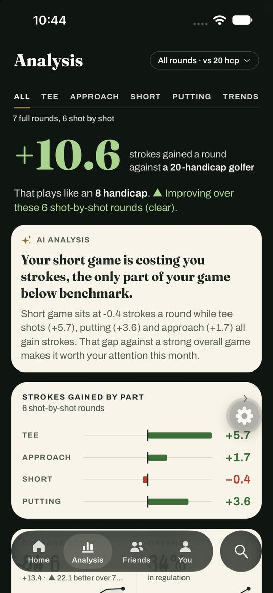
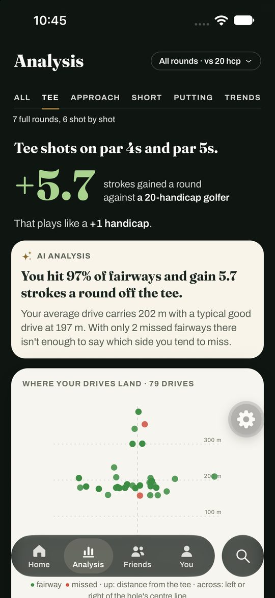
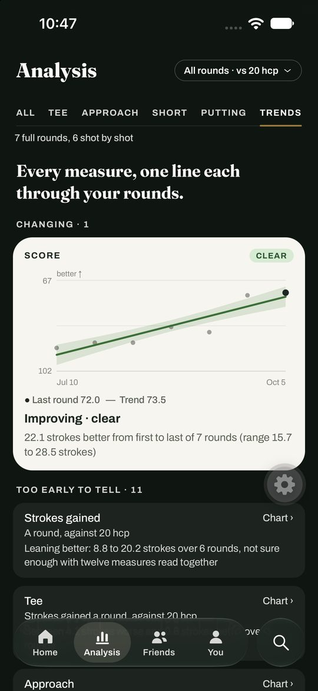

Shot data with little typing
Each shot is stored as a GPS position on a satellite map of the hole. The app infers the lie (fairway, rough, bunker, green) from course polygons, so the golfer taps where the ball is rather than describing it.
A golf analytics app that shows a player where they actually gain and lose strokes, built end to end: data pipeline, back end, AI layer and the iOS app.



A scorecard tells a golfer how many strokes they took, not where they lost them. Strokes gained, the method used to rank PGA Tour players, answers that by comparing every shot with what a benchmark player would need from the same position. It needs the position of every shot, and entering that by hand is the reason most amateurs never do it.
Each shot is stored as a GPS position on a satellite map of the hole. The app infers the lie (fairway, rough, bunker, green) from course polygons, so the golfer taps where the ball is rather than describing it.
The official Swiss clubs are mapped from OpenStreetMap, refreshed monthly by a GitHub Action, with a world course directory for search. A Python pipeline refines stale map data against current swisstopo aerial imagery using Meta’s Segment Anything model: where the two agree the polygon is accepted automatically, where they diverge it is flagged for review.
Strokes gained per part of the game, against a benchmark handicap the golfer chooses. Trends are labelled as clearly changing or too early to tell, and every measure has a plain-language explanation of its method.
The app decides which facts about a round are true and worth saying; the Claude API only phrases them, in a voice the golfer picks, and the app checks every line against the facts before showing it. Each call’s cost is metered against monthly per-user and daily global caps. The same back end uses Claude to moderate anything other golfers can see, text and photos, and nothing is shown until it passes.
React Native (Expo)MapLibreSupabase: Postgres, auth, edge functionsClaude APIRevenueCatPythonSegment AnythingOpenStreetMapswisstopoGitHub Actions
Strokes gained is only as good as its benchmark, and amateur baselines are commercially locked. Building my own from users’ shot data is a statistics problem as much as an engineering one, and one where the tools of an economist apply directly.